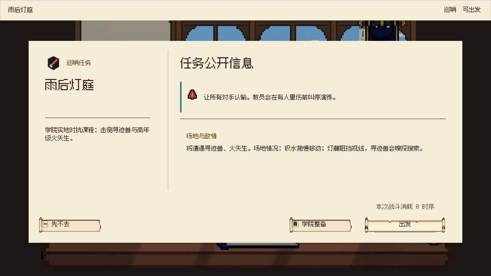

Unity 1920×1080 实际截图。任务文件、地图节点、奖励工作台继续深化，纸页增加统一的硬边接触阴影。

查看其余战斗外页面与开书录屏
编译通过，最终 Console 无错误。Play Mode 的真实按钮与命中检查已通过地图节点、固定金币、学院贡献、打开封套、选取卡牌、领取与离开。奖励使用隔离测试状态，这些检查不代表完整战斗通关。没有替换玩家存档，没有保存场景。本轮没有新增生图资产。
地图已按用户确认移除常驻百科入口，阶段显示学院。总案 5.1.24 仍有旧的地图百科入口句子，待文档口径同步；本轮没有扩大产品规则。